A comprehensive personal health record — 18 modules to manage every aspect of your health.
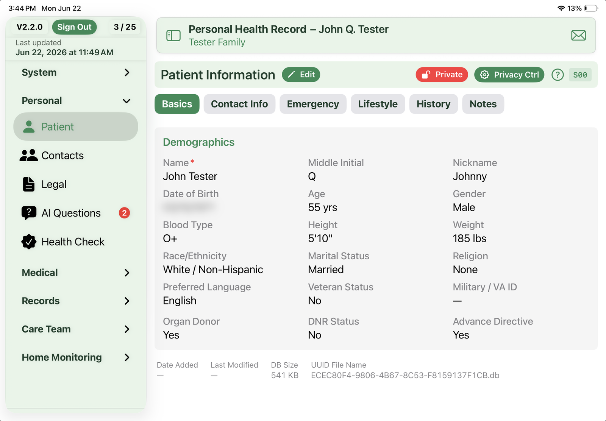
Your central health profile with personal details, emergency contacts, blood type, and more. Supports multiple countries with adaptive address and phone formatting.
Most patient portals — MyChart, Athenahealth, Cerner, eClinicalWorks, and others — let you download a Continuity of Care Document (CCDA). PHR reads that file and pulls your data into the right modules, so you don't have to retype anything.
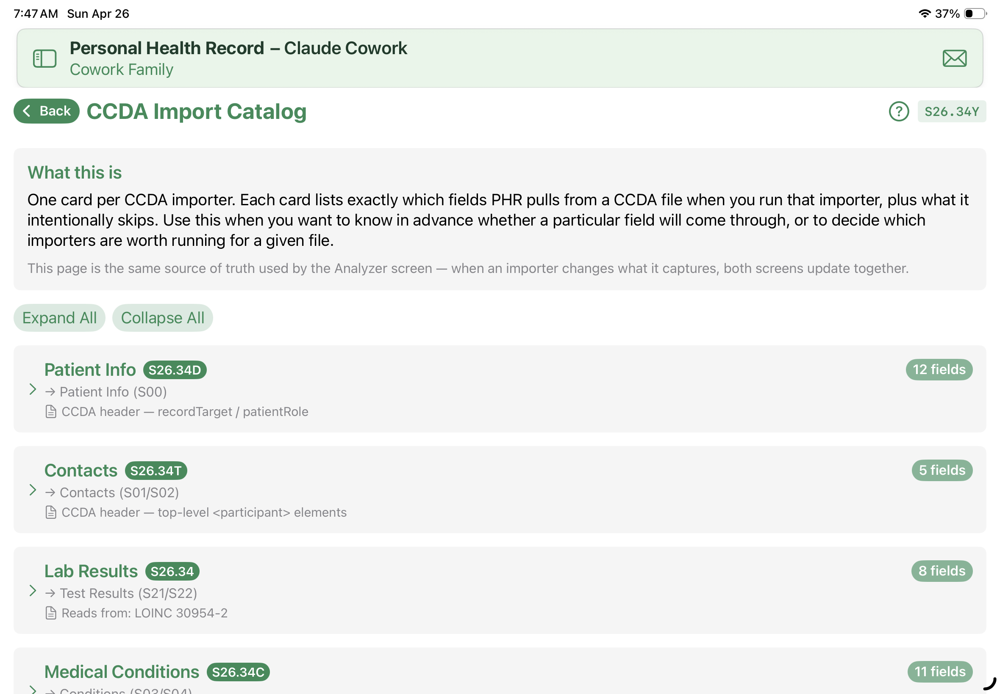
The CCDA Import Catalog shows you, importer by importer, every field PHR pulls in — and what it intentionally skips. The companion Analyze My XML File screen lets you open any CCDA read-only and see what's in it before you commit to importing. No guessing about what made it in or what got dropped.
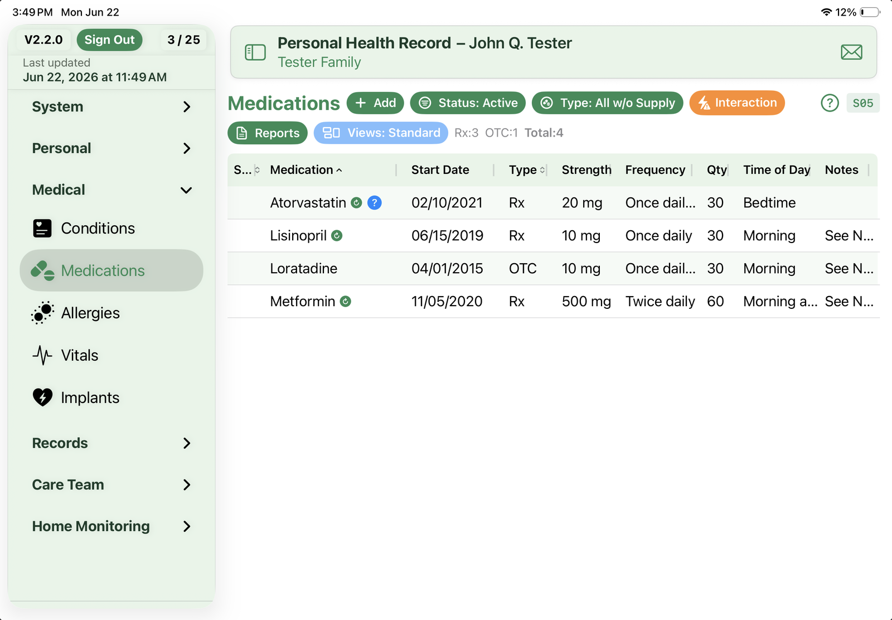
Track all your medications — prescriptions, over-the-counter, and supplements. Manage dosages, refill schedules, and check for potential drug interactions.
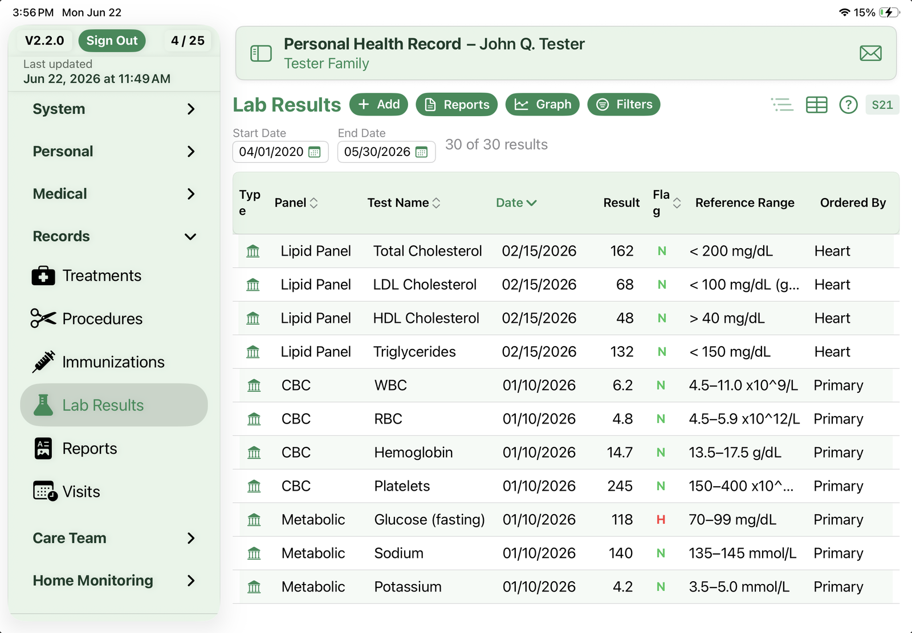
Record and monitor lab tests over time. PHR automatically evaluates results against normal ranges and highlights values that need attention.
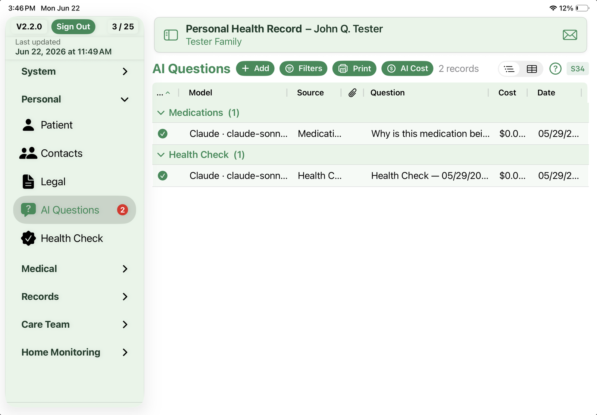
Keep a running list of things you want to ask your doctor or pharmacist. Tap the question icon on any medication, condition, or lab result to start a new question linked to that record. Then print the list before your visit — with or without the answers you've collected — so the conversation stays focused.
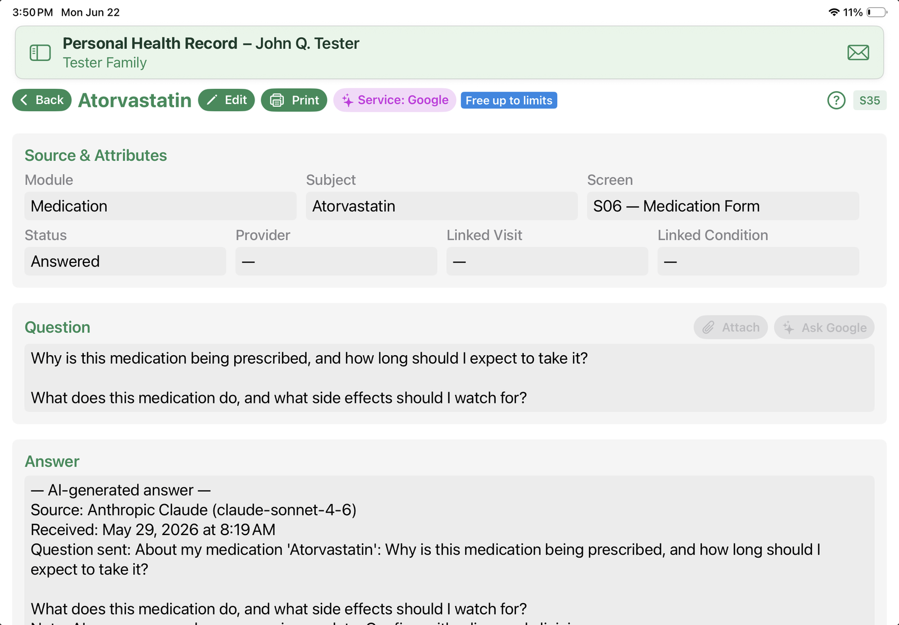
Got a question about a medication, lab result, or condition in your record? Tap Ask AI on the Question screen and PHR sends your question to the AI service you've chosen. Perplexity opens in Safari and doesn't require an account; Claude, OpenAI, Gemini, and xAI (Grok) are sent directly from the app using your own API key (each requires a paid subscription with that vendor — PHR doesn't provide AI service itself).
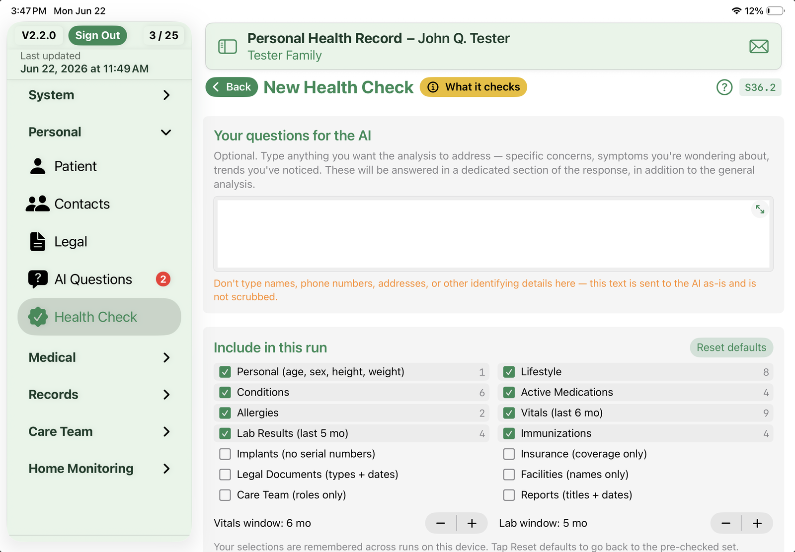
Ask an AI to look at your record without giving up your privacy. Health Check builds a de-identified snapshot — age, sex, height, weight, plus whichever clinical categories you choose to include — and sends it to the AI service you've configured. The result comes back as a PDF attached to a Health Check record so you can save it, print it, or share it.
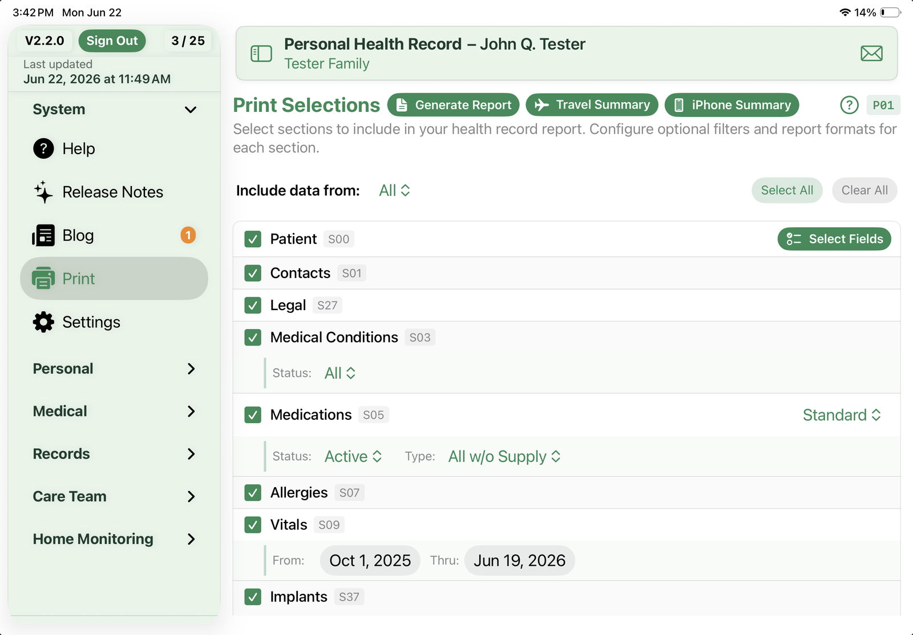
Build custom health reports by selecting exactly the sections you need. Choose from 16 data categories, apply filters per section, and generate a single comprehensive document — perfect for doctor visits, travel, or your own records.
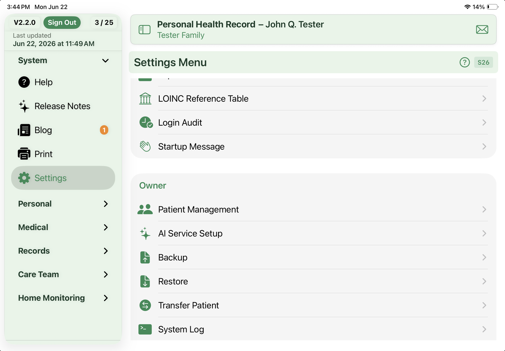
The Owner of a PHR device gets a set of system tools for keeping the data safe and portable.
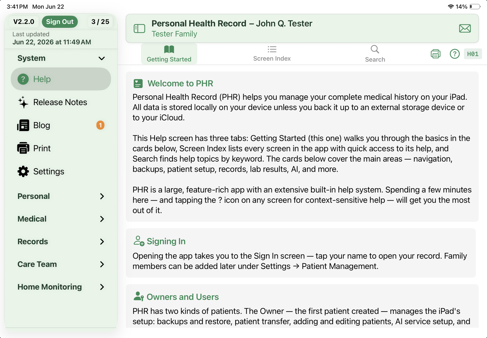
A few helpers in Settings that every user can reach, regardless of whether they're the Owner.
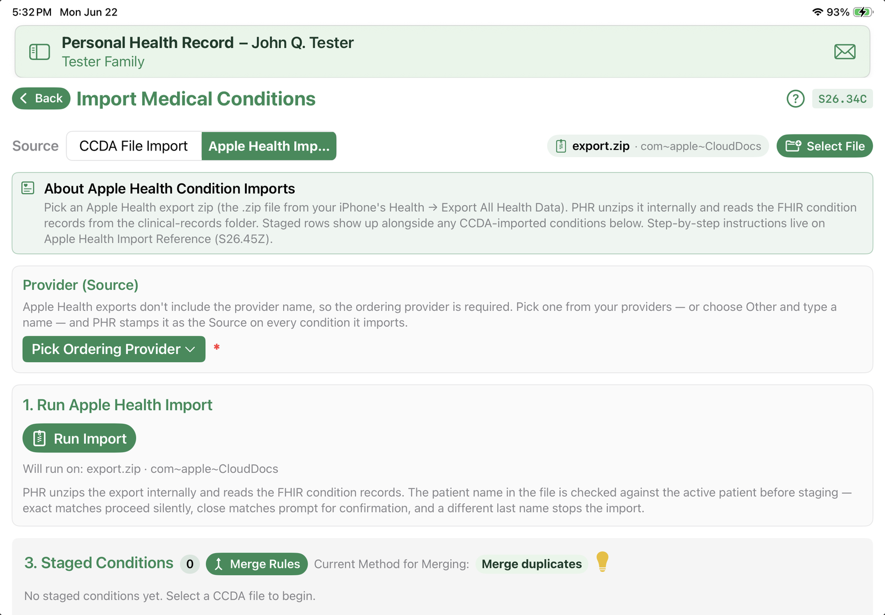
PHR can pull your records straight out of Apple Health. Choose Apple Health as the source on an import screen, and PHR reads the data your iPhone has gathered from your providers and devices — staging everything for your review before a single record is saved.
Everything you need to maintain a complete personal health record.
Personal details, emergency contacts, blood type, and demographic information.
Personal contacts related to your health — family, caregivers, and emergency contacts.
Power of attorney, living will, advance directives, and appointed contacts.
Medical conditions — active, chronic, resolved — with family history tracking.
Active and past medications with dosages, refills, and interaction checking.
Drug, food, and environmental allergies with reaction details and severity.
Blood pressure, heart rate, weight, temperature, and other vital signs over time.
Dedicated blood pressure, glucose, and sleep trackers for the readings you take at home — with quick entry and Apple Health import.
Physical therapy, mental health, and other ongoing treatment plans.
Surgeries, diagnostic procedures, and medical interventions with outcomes.
Pacemakers, joint replacements, stents, and other implanted devices with body site, side, and status.
Vaccination records with series tracking and completion status.
Test results with automatic evaluation and color-coded matrix reports.
Medical reports, imaging results, and clinical documents with attachments.
Appointment history with provider notes, follow-ups, and visit summaries.
Doctors, specialists, and healthcare providers with contact details and specialties.
Health insurance policies with group numbers, coverage details, and contacts.
Hospitals, clinics, pharmacies, and labs with addresses and phone numbers.
Powerful, customizable report writer — select exactly which modules and date ranges to include, then generate a comprehensive PDF of your health record.
Attach PDFs, images, and documents directly to Reports, Procedures, Conditions, Legal Documents, Treatments, Insurance, and Visits. Files are copied into the app's local storage and included in your backups.